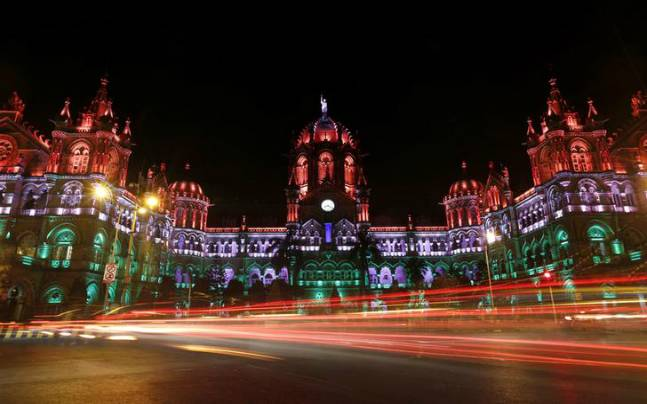
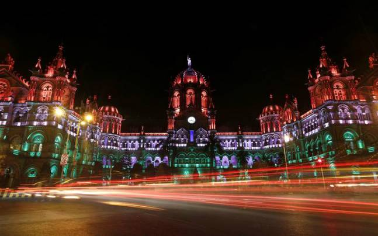

The Chhatrapati Shivaji Maharaj Terminus (CSMT), formerly known as Victoria Terminus (VT), is one of Mumbai's
most iconic landmarks and a UNESCO World Heritage Site. Completed in 1887, this magnificent railway station
was designed by F. W. Stevens to commemorate Queen Victoria’s Golden Jubilee. A quintessential example of
Victorian Gothic Revival architecture, CSMT beautifully blends British architectural styles with Indian elements,
showcasing the rich cultural tapestry of Mumbai. The station features striking pointed arches, a grand central dome,
and ornate carvings that highlight the artistry of the time.
As a vital transport hub, CSMT plays a crucial role in Mumbai's connectivity, handling millions of commuters every day.
The station is a bustling center of activity, with passengers arriving and departing across the vast railway network.
Its intricate design and high vaulted ceilings create an atmosphere of grandeur that captivates both travelers and
visitors alike. The interior of the station is adorned with stunning stained-glass windows, showcasing vibrant colors
that add to its charm. The station also features various facilities to assist passengers, including waiting areas, food
stalls, and ticket counters, ensuring a seamless travel experience.
Visiting CSMT provides a glimpse into Mumbai's colonial history and the city's development as a major transportation
hub in India. The station is especially enchanting at night when its façade is illuminated, drawing in photographers
and sightseers. It stands not only as a functional railway station but also as a significant cultural and historical
landmark, reflecting Mumbai’s journey through time and its ongoing evolution as a vibrant metropolis.
Best Time to Visit
Early Morning: To avoid crowds and see the station in its full glory.
Evening: When the building is beautifully lit up, providing an enchanting view.
Ticket Information
Entry: Free access to the exterior and platforms, but interior access may be restricted.
Ticket Price: No entry fee for viewing the exterior.
Address
Chhatrapati Shivaji Maharaj Terminus
Location: Near BMC Headquarters,
Address: Chhatrapati Shivaji Terminus Area, Fort, Mumbai, Maharashtra 400001, India.
 
